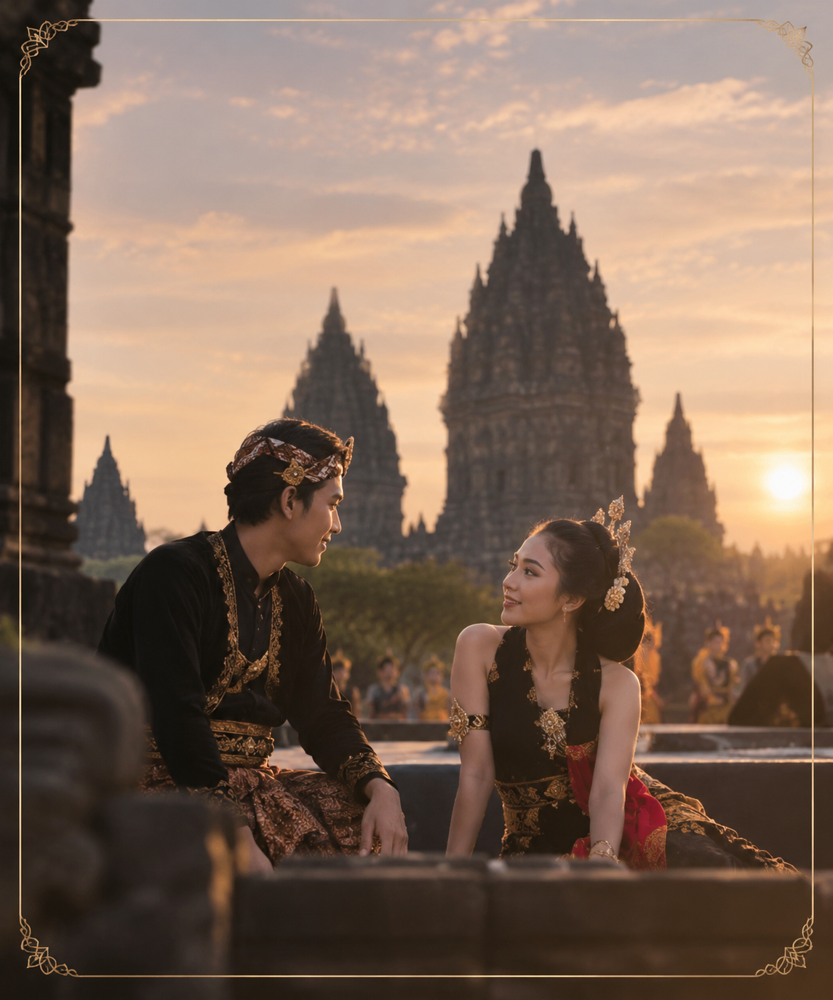
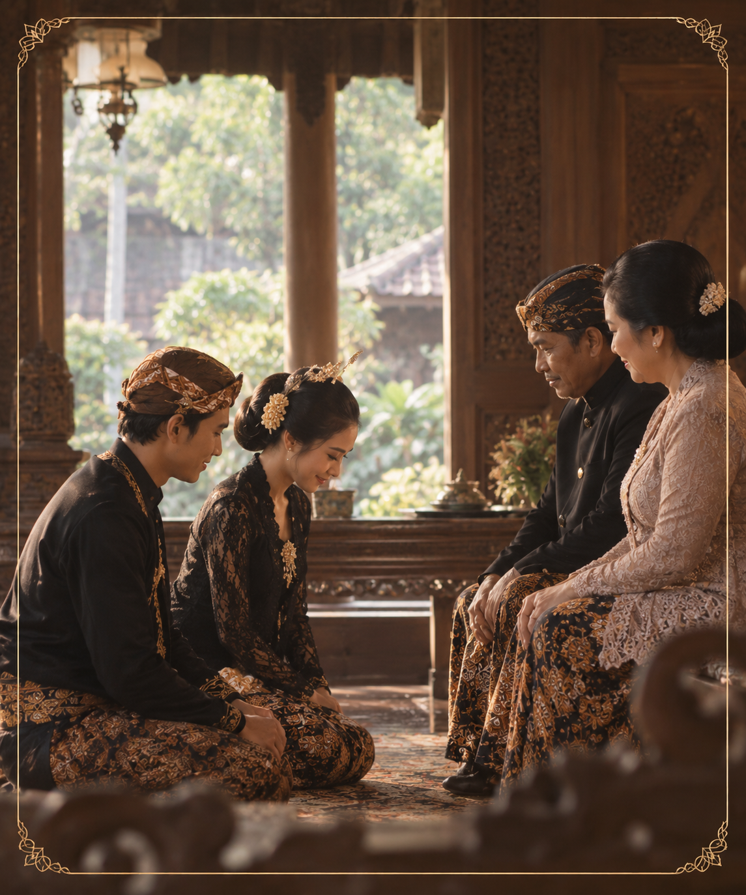
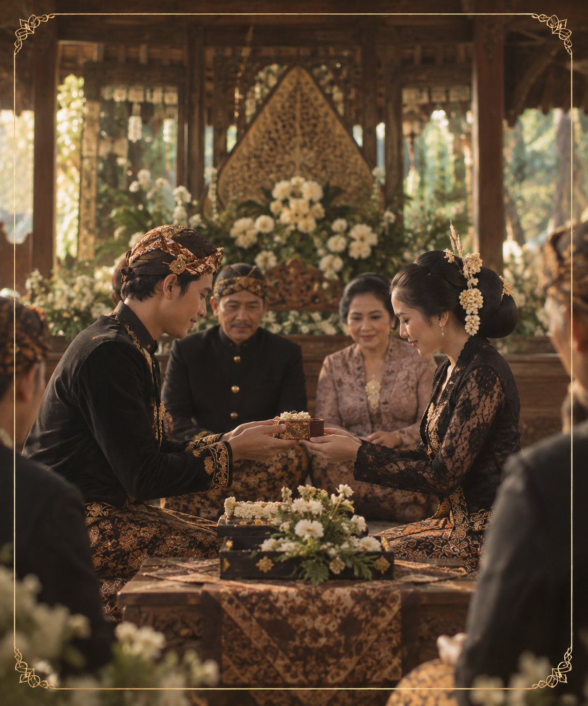
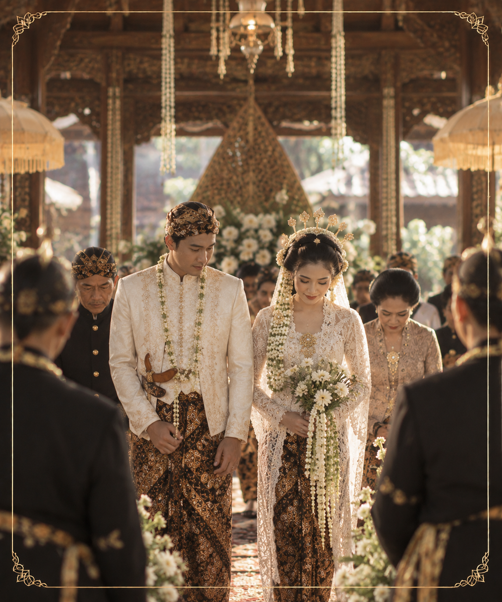

"Dan di antara tanda-tanda (kebesaran)-Nya ialah Dia menciptakan pasangan-pasangan untukmu dari jenismu sendiri, agar kamu cenderung dan merasa tenteram kepadanya, dan Dia menjadikan di antaramu rasa kasih dan sayang. Sungguh, pada yang demikian itu benar-benar terdapat tanda-tanda bagi kaum yang berpikir."
Lelampahan Tresna
Kisah Cinta Arya & Sekar
-

Pertemuan Pertama
Kisah kami dimulai saat bekerja bersama dalam pementasan Sendratari Ramayana di Prambanan. Dari pertemuan sederhana itu, tumbuh rasa yang membawa kami semakin dekat.
-

Menjalin Komitmen
Setelah berdiskusi bersama, kami memohon doa dan restu orang tua untuk melangkah ke tahap hubungan yang lebih serius dan membangun kehidupan bersama.
-

Lamaran (The Engagement)
Kami melangsungkan prosesi lamaran dengan tradisi Jawa. Penyerahan tanda pengikat menjadi simbol kesungguhan dan komitmen kedua keluarga untuk menyatukan kami.
-

Hari Pernikahan
Hari yang kami nantikan: mengikat janji sebagai pasangan hidup di hadapan Tuhan dan keluarga, dengan harapan membangun rumah tangga yang penuh kasih dan keberkahan.